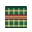
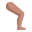

Akhir bukuท้ายเล่ม
Glosari
อภิธานศัพท์
Semua perkataan: 60, disusun mengikut abjadคำศัพท์ทั้งหมด 60 คำ เรียงตามตัวอักษร
| Rumi | Jawi | Maksudความหมาย | Pelajaranบทที่ |
|---|---|---|---|
| اير | น้ำ | 3 | |
| aurat | عورة | เอาเราะฮ์ อวัยวะที่ต้องปกปิด | 11 |
| baju kurung | باجو کوروڠ | ชุดบาจูกูรง | 11 |
| bandar | بندر | เมือง | 5 |
| berjalan | برجالن | เดิน | 7 |
| bersih | برسيه | สะอาด | 8 |
| bersolat | برصلاة | ละหมาด | 7 |
| besar | بسر | ใหญ่ | 8 |
| buah | بواه | ผลไม้ | 3 |
| dahaga | دهاݢا | กระหายน้ำ | 7 |
| esok | ايسوق | พรุ่งนี้ | 2 |
| fardu | فرض | ฟัรฎู (จำเป็น) | 9 |
| gembira | ݢمبيرا | ดีใจ | 8 |
| hari ini | هاري اين | วันนี้ | 2 |
| hitam | هيتم | ดำ | 8 |
| هوسڤيتل | โรงพยาบาล | 5 | |
| ايکن | ปลา | 3 | |
 kain sarung | کاين ساروڠ | ผ้าโสร่ง | 11 |
| kampung | کامڤوڠ | หมู่บ้าน | 5 |
| kecil | کچيل | เล็ก | 8 |
| kedai | کداي | ร้านค้า | 5 |
| kelmarin | کلمارين | เมื่อวานซืน | 2 |
| kenyang | کڽڠ | อิ่ม | 3 |
| kotor | کوتور | สกปรก | 8 |
| lapar | لاڤر | หิว | 3 |
| lusa | لوسا | มะรืนนี้ | 2 |
 lutut | لوتوت | หัวเข่า | 11 |
| makan | ماکن | กิน | 7 |
| malas | مالس | ขี้เกียจ | 8 |
| mandi | مندي | อาบน้ำ | 7 |
| manis | مانيس | หวาน | 3 |
| masin | ماسين | เค็ม | 3 |
| masjid | مسجد | มัสยิด | 5 |
| ممباچ | อ่าน | 7 | |
| menulis | منوليس | เขียน | 7 |
| menutup | منوتوڤ | ปกปิด | 11 |
| مينوم | ดื่ม | 7 | |
| muka | موک | ใบหน้า | 11 |
| nasi | ناسي | ข้าว | 3 |
| padang | ڤادڠ | สนาม | 5 |
| pahala | ڤهالا | ผลบุญ | 9 |
| pasar | ڤاسر | ตลาด | 5 |
| pedas | ڤدس | เผ็ด | 3 |
| penat | ڤنت | เหนื่อย | 8 |
| pusat | ڤوست | สะดือ | 11 |
| putih | ڤوتيه | ขาว | 8 |
| rajin | راجين | ขยัน | 8 |
| rakaat | رکعة | ร็อกอัต | 9 |
| roti | روتي | ขนมปัง โรตี | 3 |
| رومه | บ้าน | 5 | |
| sayur | سايور | ผัก | 3 |
| sedap | سدڤ | อร่อย | 3 |
| سکوله | โรงเรียน | 5 | |
| seluar panjang | سلوار ڤنجڠ | กางเกงขายาว | 11 |
| semalam | سمالم | เมื่อวาน | 2 |
| sunat | سنة | สุนัต (ส่งเสริมให้ทำ) | 9 |
| surau | سوراو | สุเหร่า | 5 |
| tapak tangan | تاڤق تاڠن | ฝ่ามือ | 11 |
| tidur | تيدور | นอน | 7 |
| تودوڠ | ผ้าคลุมศีรษะ | 11 |